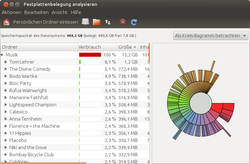
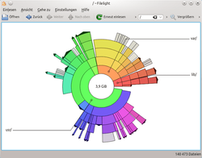
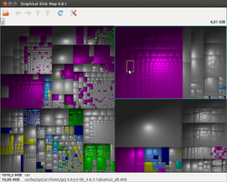
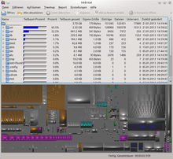

Festplattenbelegung
Zum Verständnis dieses Artikels sind folgende Seiten hilfreich:
Die Analyse des belegten Speicherplatzes einer Festplatte kann sehr wichtig sein. So kann man schnell herausfinden, ob bestimmte Benutzer durch riesige Datenmengen die Festplatte füllen oder warum einer Festplatte immer wieder der Platz ausgeht (beispielsweise weil eine Logdatei eines falsch konfigurierten Serverdienstes riesige Ausmaße annimmt). In der Windows-Welt kennt man dazu Programme wie TreeSize, SequoiaView oder WinDirStat. Unter Linux gibt es sehr gute und leistungsfähige Alternativen.
Programme¶
Disk Usage Analyzer¶

Der Disk Usage Analyzer  (Baobab – unter Unity "Festplattenbelegung analysieren") ist ein grafisches Programm für den GNOME-Desktop zur Analyse der Belegung von Partitionen auf lokalen oder entfernten Datenträgern. Die Anwendung ist in der Lage, angegebene Verzeichnisse oder ganze Dateisysteme zu scannen, um eine graphische Baumansicht zu erstellen, inklusive der Anzeige des Platzverbrauches der Datei bzw. des Verzeichnisses. Das Programm besitzt zudem die Möglichkeit, nach Dateien zu suchen und Änderungen am Homeverzeichnis oder in jedem eingebundenem Laufwerk in die Analyse aufzunehmen.
(Baobab – unter Unity "Festplattenbelegung analysieren") ist ein grafisches Programm für den GNOME-Desktop zur Analyse der Belegung von Partitionen auf lokalen oder entfernten Datenträgern. Die Anwendung ist in der Lage, angegebene Verzeichnisse oder ganze Dateisysteme zu scannen, um eine graphische Baumansicht zu erstellen, inklusive der Anzeige des Platzverbrauches der Datei bzw. des Verzeichnisses. Das Programm besitzt zudem die Möglichkeit, nach Dateien zu suchen und Änderungen am Homeverzeichnis oder in jedem eingebundenem Laufwerk in die Analyse aufzunehmen.
Installation¶
Disk Usage Analyzer ist bei Ubuntu und Ubuntu MATE ab Werk enthalten und kann bei Bedarf über das folgende Paket nachinstalliert werden [1]:
baobab
 mit apturl
mit apturl
Paketliste zum Kopieren:
sudo apt-get install baobab
sudo aptitude install baobab
Man findet das Programm bei Ubuntu-Varianten mit einem Anwendungsmenü unter "Zubehör -> Festplattenbelegung analysieren" oder bei Ubuntu MATE unter "Systemwerkzeuge -> MATE-Fesplattenbelegungsanalyse".
Kommandozeilen-Start¶
Mit "baobab /home/BENUTZERNAME/" im Terminal oder als "Benutzerdefinierte Aktion" im Thunar kann direkt das Homeverzeichnis überprüft werden.
Filelight¶

Filelight zeigt die Festplattenbelegung unter KDE in einer innovativen Art und Weise an. Ausgehend von / (Wurzel des Dateisystems) wird jedes Verzeichnis aus dem Verzeichnisbaum als Fläche dargestellt. Je größer die Fläche, desto größer ist der Inhalt des Verzeichnisses. Baobab hat diese Ansicht übernommen.
Installation¶
Das Programm lässt sich über die Paketquellen von Ubuntu installieren. Folgendes Paket wird benötigt [1]:
filelight (universe)
mit apturl
Paketliste zum Kopieren:
sudo apt-get install filelight
sudo aptitude install filelight
Danach kann man es in KDE unter "Dienstprogramme -> Filelight" finden.
Graphical Disk Map¶

Graphical Disk Map (GdMap) ist ein GTK+-Programm, das alle Dateien eines bestimmten Verzeichnisses oder einer ganzen Partition in Form von verschiedenfarbigen Kästchen darstellt. Je größer die Datei, desto größer das Kästchen. Somit eignet sich das Programm gut zum Aufräumen von Datenträgern.
Mit GdMap kann man die Ordner und Dateien zwar anzeigen lassen, jedoch nicht öffnen. Es ist rein zum Betrachten der Dateigrößen geschaffen. Man kann die durch ein Suffix gekennzeichneten Dateitypen einzeln einfärben und das Einfärben der Verzeichnisebenen einschränken.
Installation¶
GdMap lässt sich über die Paketquellen von Ubuntu installieren. Folgendes Paket wird benötigt [1]:
gdmap (universe)
mit apturl
Paketliste zum Kopieren:
sudo apt-get install gdmap
sudo aptitude install gdmap
Man findet es bei Ubuntu-Varianten mit einem Anwendungsmenü unter "Zubehör -> Plattenspeicher anzeigen" finden.
K4DirStat¶

K4DirStat ist ebenfalls ein Programm, das alle Dateien eines bestimmten Verzeichnisses oder einer ganzen Partition in Form von verschiedenfarbigen Kästchen darstellt. Je größer die Datei, desto größer das Kästchen. Somit eignet sich das Programm gut zum Aufräumen von Datenträgern. Das Programm kombiniert die Ansicht von Baobab mit der von GdMap. Es bindet sich gut in die KDE-Desktopumgebung ein. Anschließend kann man K4DirStat über "Dienstprogramme -> K4DirStat Verzeichnisstatistik" starten.
Der Vorteil an K4DirStat ist, dass man Dateien bei Bedarf direkt aus dem Programm heraus löschen bzw. bearbeiten kann. So kann man einen Platzfresser schnell ausmachen und gleich beseitigen.
QDirStat ist eine Portierung auf eine aktuelle Qt-Version, jedoch ohne KDE-Abhängigkeit, die vor allem für Lubuntu und Xubuntu geeignet ist. Für die Installation gibt es auch ein PPA.
K4DirStat ist seit Ubuntu 12.04 in den offiziellen Paketquellen enthalten. Folgendes Paket muss installiert werden:
k4dirstat (universe)
mit apturl
Paketliste zum Kopieren:
sudo apt-get install k4dirstat
sudo aptitude install k4dirstat
JDiskReport¶
Wer eine desktop- und plattformübergreifende Alternative sucht, wird beim englischsprachigen JDiskReport fündig. Grafisch werden nur einfache Balken- und Kreisdiagramme geboten. Allerdings gibt es nette Kleinigkeiten wie eine Größenverteilung einzelner Dateien, eine Gruppierung nach Alter oder die Angabe eines benutzerdefinierten Befehls. Sämtliche Auswertungen können auch gedruckt werden.
Einzige Voraussetzung ist ein installiertes Java. Das Programm braucht nur heruntergeladen  und entpackt zu werden. Der Programmstart erfolgt über die Datei jdiskreport-VERSION.jar.
und entpackt zu werden. Der Programmstart erfolgt über die Datei jdiskreport-VERSION.jar.
Soll JDiskReport in das Paketmanagement integriert werden, existiert ein PPA:
PPA¶
Adresszeile zum Hinzufügen des PPAs:
ppa:msassmann/jdiskreport
Hinweis!
Zusätzliche Fremdquellen können das System gefährden.
Ein PPA unterstützt nicht zwangsläufig alle Ubuntu-Versionen. Weitere Informationen sind der  PPA-Beschreibung des Eigentümers/Teams msassmann zu entnehmen.
PPA-Beschreibung des Eigentümers/Teams msassmann zu entnehmen.
Damit Pakete aus dem PPA genutzt werden können, müssen die Paketquellen neu eingelesen werden.
Nach dem Aktualisieren der Paketquellen kann JDiskReport über folgendes Paket installiert werden [1]:
jdiskreport (ppa)
mit apturl
Paketliste zum Kopieren:
sudo apt-get install jdiskreport
sudo aptitude install jdiskreport
Java Web Start¶
Statt der Installation auf dem eigenen Rechner kann man auch Java Web Start für JDiskReport verwenden: jdiskreport.jnlp . Dann arbeitet man automatisch immer mit der neuesten Version.

Terminal¶
Steht z.B. auf einem Server keine grafische Oberfläche zur Verfügung, so kann man sich auch über das Terminal helfen. Hierfür stehen die beiden Befehle:
zur Verfügung. Sie sind fester Teil jeder Linux-Distribution.
Beispiel: Der folgende Befehl zeigt die Größen der Unterverzeichnisse des aktuellen Pfads aufsteigend sortiert dar:
du -shx ./* | sort -h
40K ./abc.pdf 2,0M ./def.odt 5,2M ./Diverses 329M ./Raspberry 18G ./Filme 78G ./Serien
agedu¶
agedu kann als Alternative zu du anzeigen, wann welche Dateien zum letzten Mal verwendet wurden. Dies ermöglicht es, Dateien zu finden, die viel Platz verbrauchen und länger nicht mehr verwendet wurden.
Discus¶
Discus versucht, die Ergebnisse von df übersichtlicher auszugeben. So erscheint die Ausgabe farbig, man sieht Balkendiagramme usw.
Das Programm lässt sich über die Paketquellen von Ubuntu installieren. Folgendes Paket wird benötigt [1]:
discus (universe)
mit apturl
Paketliste zum Kopieren:
sudo apt-get install discus
sudo aptitude install discus
Nach der Installation kann man Discus im Terminal [2] über folgenden Befehl starten:
discus
Mount Total Used Free Prcnt Graph / 7.81 GB 3.61 GB 4.20 GB 46.2% [*****-----] /sys 0 GB 0 GB 0 GB 0.0% [----------] /boot 0.19 GB 0.06 GB 0.13 GB 33.0% [***-------] +media/data 269.98 GB 124.10 GB 145.88 GB 46.0% [*****-----] /home 465.75 GB 10.49 GB 455.25 GB 2.3% [----------]
NCurses Disk Usage¶
NCurses Disk Usage (ncdu) basiert – wie der Name bereits vermuten lässt – auf der Bibliothek ncurses und stellt auf der Kommandozeile eine interaktive Übersicht über den Speicherplatz-Verbrauch eines Ordners bereit. Das Programm kann also als übersichtlichere Alternative zu du betrachtet werden.
Ncdu lässt sich über die offiziellen Paketquellen von Ubuntu installieren. Folgendes Paket wird benötigt [1]:
ncdu (universe)
mit apturl
Paketliste zum Kopieren:
sudo apt-get install ncdu
sudo aptitude install ncdu
Nach der Installation kann man ncdu im Terminal [2] durch Eingabe des folgenden Befehls starten:
ncdu
ncdu 1.3 ~ Use the arrow keys to navigate, press ? for help --- /usr/src/linux-git ----------------------------------------- 394.2MB [##########] /.git 169.7MB [#### ] /drivers 77.1MB [# ] /arch Total disk usage: 737.5MB Apparent size: 737.5MB Items: 29671
Links¶
xdiskusage
- Ältere Alternative zu den bereits genannten ProgrammenDateisystem und Datenträger
 Artikelübersicht
Artikelübersicht
- Erstellt mit Inyoka
-
 2004 – 2017 ubuntuusers.de • Einige Rechte vorbehalten
2004 – 2017 ubuntuusers.de • Einige Rechte vorbehalten
Lizenz • Kontakt • Datenschutz • Impressum • Serverstatus -
Serverhousing gespendet von